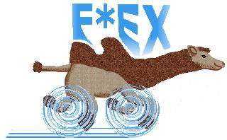

F*EX - Frams' Fast File EXchange

F*EX (Frams' Fast File EXchange) is a service to send big (large, huge,
giant, ...) files from a user A to a user B.
The sender uploads the file to the F*EX server using a
WWW upload form and the recipient
automatically gets a notification e-mail with a download-URL.
You say:
Why do I need another service for file transfer?!
I have e-mail, ftp, ssh and even sendfile!
I say:
You still need F*EX :-)
For example, you want to send your friend your last holiday video (1 GB).
You have the following possibilities (and problems):
sending a DVD by postal service
Out of the question - we live in the year
<>
after invention of the internet!
Sending media (hardware) is for grandpas.
using e-mail
Most e-mail servers have a limit of 10 MB per e-mail and a
storage-quota of a few 100 MB per user or even less.
uucp
Why not cuneiform writing on stone plates?
ssh
You have your friends password or you are willing to give him yours
- just for a file transfer?
ftp
- Using which ftp server?
- Using which account, which password?
- You do not mind sending unencrypted passwords and files over the insecure internet?
- Your proxy supports passive-ftp?
- In case of anonymous ftp:
- Does it allow 1 GB uploads?
- Does it allow to delete the upload afterwards?
- Who else can download your file?
- Who else can delete your file?
- You have to send your friend the download-URL, he has to
inform you about the successful download, you have to delete
it afterwards.
All in all: a pain in the ass.
http
- No default upload and user management - must be programmed
- No auto-notification
- No auto-deletion
- Very few http servers can handle files greater than 2 GB
- You run UNIX and have sendfile installed?
- Your recipient runs UNIX and has sendfile installed?
- Neither you nor your recipient has a firewall blocking port 487?
commercial services like DropLoad, ALLPeers, YouSendIt, etc
- What limit do they have (most: < 2 GB)?
- What about security and privacy: will your files be save and secure?
- Are they open source based or closed proprietary?
- Are they accessible with any browser or do you need java, active-X, flash or other evil plugins?
- Will they exist longer than a few months?
(DropLoad, ALLPeers and drop.io already have terminated their business)
If you have answered only once "no" to the questions above, then you need
F*EX.
Main features of F*EX
- file transfer of virtually unlimited file size
- recipient and sender only need an e-mail program and a web browser -
of any kind, they do not have to install any software
- RESEND and REGET for resuming after link failures at last sent byte
- auto-notification of recipient
- auto-deletion after download
- auto-deletion after expiration date (default: 5 days)
- full-users can create one time upload URLs for foreign users
- full-users can create sub-users, who can send only to this full-user
- full-users can create groups, an analogy to mailing lists, but for files
- maintenance-free: no admin interaction necessary besides creating new F*EX accounts
- Sending to multiple recipients needs storage on the server only once
- F*EX is a HTTP web-service and needs no firewall-tunnels
- support for streams, too
- for real UNIX users, there are the shell programs fexsend and fexget to
avoid annoying web browser usage
- protocol and source-code free available
Let's talk about SEX
F*EX has a companion: Stream EXchange (SEX).
You can imagine SEX as network wide UNIX pipes with a relay between.
This can be useful for piping data from user A to user B where A and B cannot
establish a direct connection, but both can connect by HTTP to the
SEX server. For seamless integration into the UNIX tool chain, there are
the shell-tools sexsend and sexget.
Authentication is the same as with F*EX.
Still questions?
See the FAQ
and the use cases.
contact: fexmaster